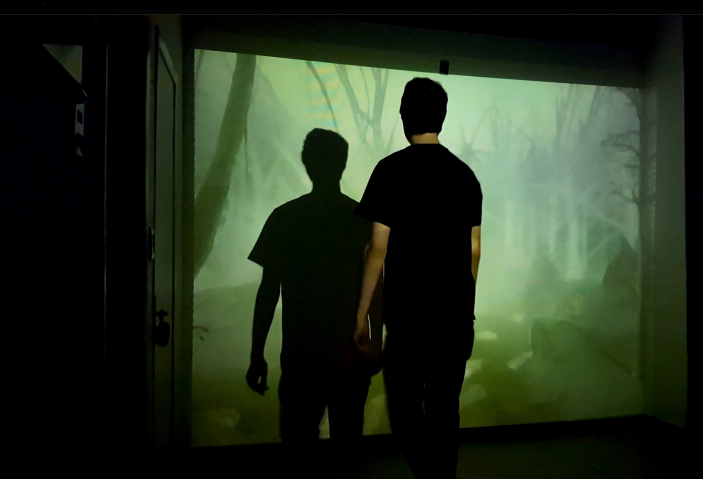
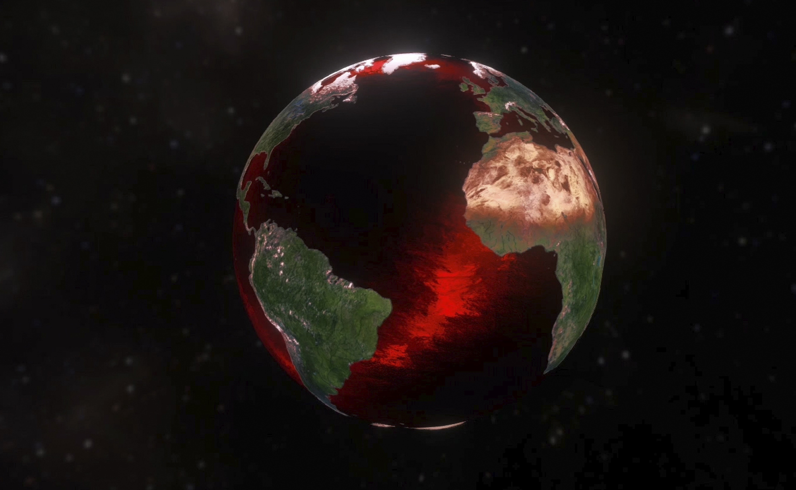
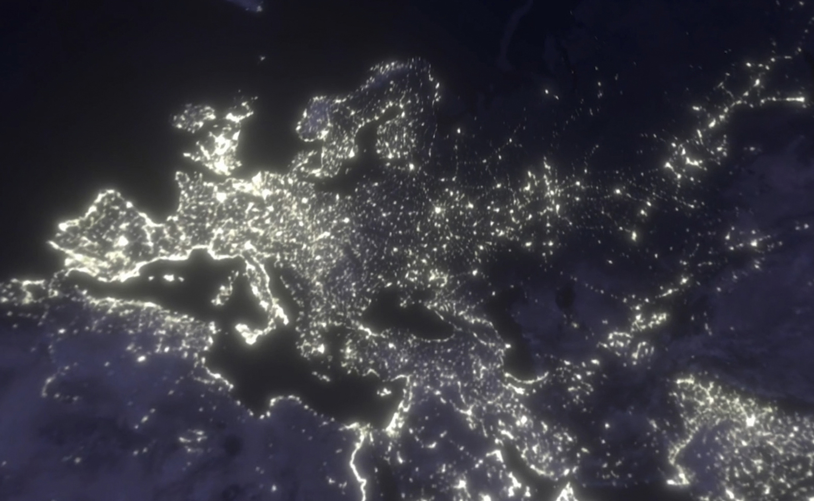
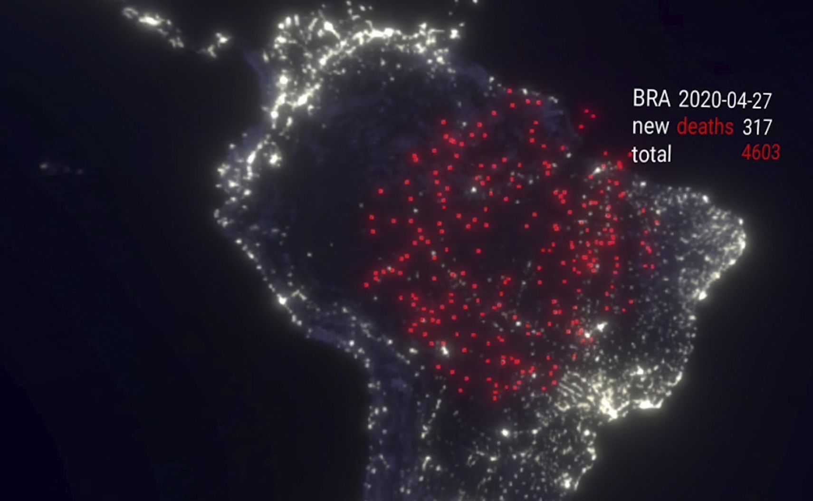
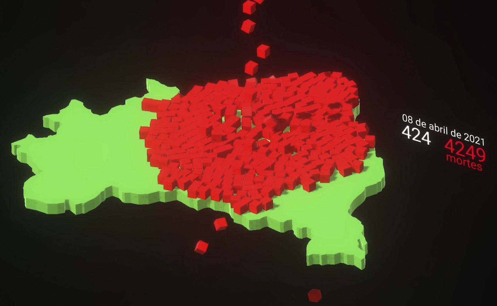
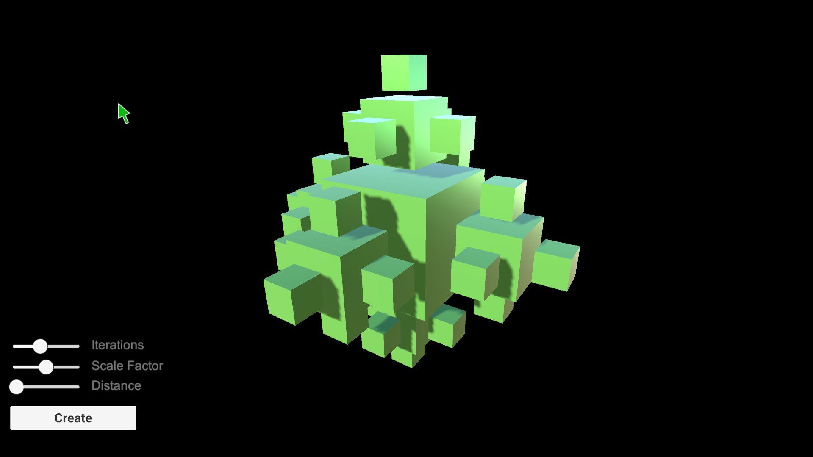
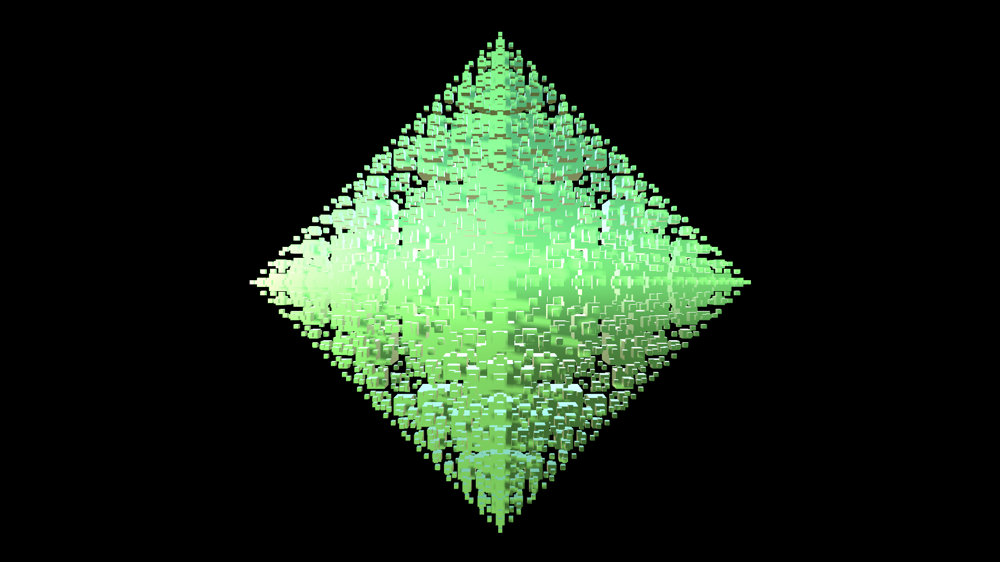
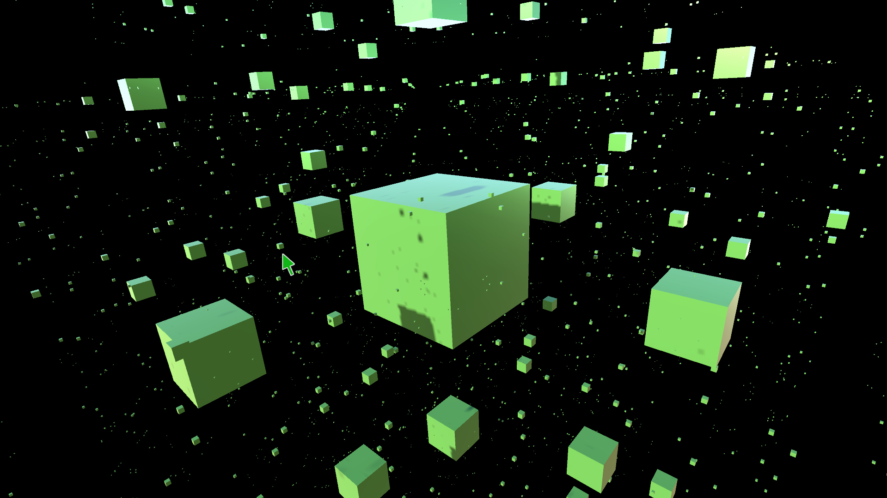
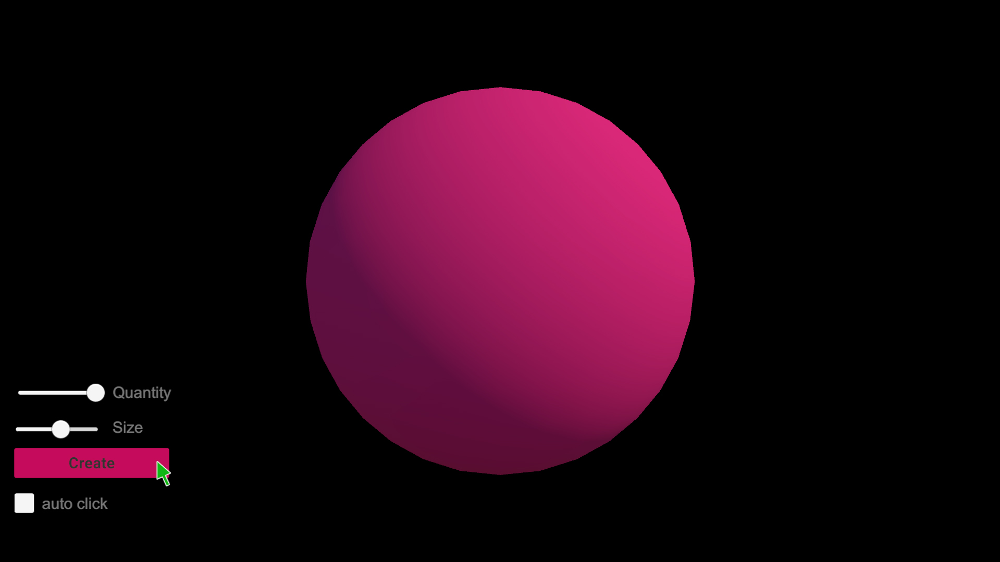
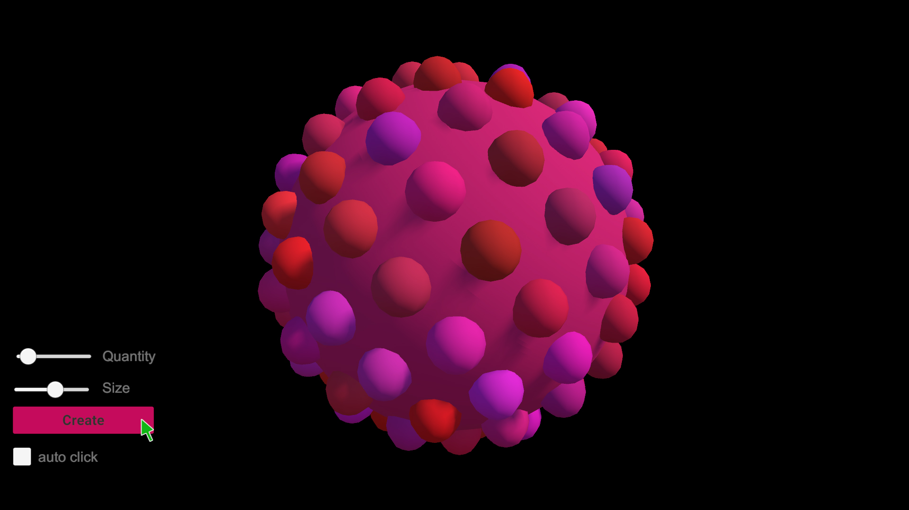

Real
Clique, clique e clique
Real é uma obra de arte interativa e conceitual na qual uma moeda de 1 Real cai em um buraco na terra, quando um botão é pressionado. A obra lida com conceitos de limites de diversão e entretenimento, serious fun, e abre-se para a discussão de tópicos como limites de instâncias antes do sistema travar, vício e desperdício. A obra anteveu a tragédia do sistema de Bets no país, sendo selecionada para ser exposta FILE (Festival Internacional de Linguagem Eletrônica).

Desaparecimento
Uma floresta virtual
A instalação mostra o desaparecimento da flora de uma floresta ambígua: nativa, domesticada, alienígena e virtual. Utilizando um sensor de movimento, assim que a floresta percebe a presença humana, tem tempo real, ela começa a desaparecer. A flora apenas se recompõe lentamente quando não há detecção de movimento, ou seja, sua plenitude só existe sem observadores humanos.
Imagens



DataViz
Experimentos pandêmicos com dados públicos
Este experimento visual foi realizado utilizando o banco de dados público Our World in Data sobre dados de número de mortes de pessoas por pelo SARS-CoV-2 no Brasil, no auge da pandemia ocorrida em 2021. Inspirado pelo trabalho do estatístico Hans Rosling, os dados foram utilizados em tempo real em modelos tridimensionais, gerando partículas e objetos a partir das linhas de uma planilha de dados CSV (Comma Separated Values), gerando animações visuais com intuito de trazer um outro olhar sobre as mortes neste período.
Imagens




Arte Generativa
Experimentos tridimensionais
Tenho interesse em Arte Generativa, tendo realizado
Imagens




